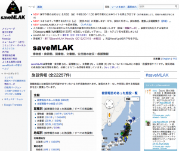

8月, 2012
技術コラム第2回：ロンドンオリンピックとBBC
LODチャレンジ実行委員会で「メディアとLOD」を担当します乙守です。
オリンピック開催中でもあり、今回は「本テーマの旬な導入編」ということでお読み頂ければと思います。
○ロンドンオリンピックとLODとの繋がり
まずは、なんと言ってもWorld Wide Webの考案者、LODの提唱者、そしてLODチャレンジJapanとの関係で言えばLODチャレンジJapan2011で応援メッセージを送って頂いたティム・バーナーズ・リー卿がオリンピック開会式への登場したこと。
インターネットの基盤を作った「イギリスが生んだ偉大な科学者」ということでは当然なのかもしれませんが、本分野の関係者?の間でも大いに盛り上がったサプライズです。
そして、ティム・バーナーズ・リー卿とともにイギリス、ロンドンがお膝元となる本コラムのテーマ「イギリス放送協会＝BBC」。
BBCとLODは、実はとても深い関係があります。
放送メディアの分野においてLODそしてセマンティックの技術の導入を積極的に進め、このロンドンオリンピックで実際のサービスとして運用しているのがBBCなのです。
○データ、データ、データ
BBCがLOD技術の導入を進める背景として「三つのデータ」があります。
一つ目のデータは、インターネット上にあるソーシャルデータです。
前回の北京オリンピック当時に比べてFaceBookユーザは１億人から９億人へ、twitterは600万人から６億人と大幅に増えました。
ロンドンオリンピックは「ソーシャル＊メディア＝ソーシャリンピック」ともマスコミでは言われています。BBCも”世界初のソーシャルメディアオリンピック”として、BBC SPORT Olympicsではtwitterを利用したサイト構築なども進めています。[参考URL(1)]
二つ目のデータは、オリンピック自体のデータです。
17日間という短い時間でアスリート数 10,000以上、参加チーム数200以上、26の競技が32に及ぶ地域で日々行わていくのですから想像もつかないデータ量です。
BBCは、こうした情報＝ページをLODとセマンティックWeb技術を利用して自動生成しています。[参考URL(2)]
例えば、気迫いっぱい！で金メダルを獲得した松本薫選手のページでは、松本選手の記事、試合記録、他の選手と比較情報などが掲載されています。
このアスリートの情報ですが、これはイギリス選手だけでなく、オリンピックに参加した全選手について、その試合結果や関連した記事をBBCのサイトで発信しています。
そして三つ目のデータがBBCにおける放送戦略に関わるデータです。
BBCは８つのテレビ放送局、１０の公共ラジオ局、４０のローカルラジオ局など多くのチャネルを運営し、そこで多種多様なコンテンツを発信しています。
と同時に、以前はTVやPCが対象でしたが、BBC iPlayerなどのスマートフォンやタブレットなど視聴が利用する媒体へ対応も行なっています。
BBC は、このような各種番組や媒体がサイロとして孤立するのではなく、１０の番組（カテゴリ）、４つの画面が（PC／TV／スマートフォン/タブレット）をひ とつのサービスとして視聴者に届けること＝「One,Ten,Fourオンライン戦略」を昨年からオンライン戦略として進めています。[参考URL(3)]
イギリス公共放送ということで、Webサイトのニュース記事やラジオ番組などしか日本では利用できなく私自身経験できないのですが、一 人のアスリートの試合結果のニュースが４種類の媒体でシームレスに視聴できる、と同時にニュース記事から映像もシームレスに繋がる世界を目指しているよう です。
○BBCとLOD
まさに、データ、データ、データの中、ロンドンオリンピックを舞台にBBCは世界初のソーシャルオリンピック、デジタルオリンピックに果敢に挑戦しているわけですが、ここで利用されているのがLODそしてセマンティックWeb技術です。
と言いつつ、十分に記述できるスペースがないのとオリンピックの最中もBBC Internet Blogから技術情報がアップされ続けているため、今回は現状入手可能な情報の紹介ということで、残りは次回にしたいと思います。
(1)LOD技術の導入目的と簡単な技術説明
少々古いですが、[参考URL(4)][参考URL(5)][参考URL(6)]にまとめていますので参考にして頂ければと思います。
(2)セマンティック技術を用いた動的出版(Dymanic Semantic Publication)
ロンドンオリンピックで実運用されている、前述したページの自動生成や各番組をシームレスにつなげるサービスの基盤となる技術です。
本技術は2年前のワールドカップにまず実験的に開発され[参考URL(7)]今回のオリンピックでもよりスケーラビリティをあげて運用されています。[参考URL(8)][参考URL(9-1)] [参考URL(9-2)][参考URL(9-3)]
○中締めとして
本コラムのテーマ、「スポーツとLOD」ですが、実は昨年のLODチャレンジJapanではスポーツを題材とした作品の応募はありませんでした。
スポーツ関連のオープンデータについて私も調査したことはありませんが、”スポーツ”はLODチャレンジJapanで新鮮なテーマになりそうです。
オリンピックの興奮冷めやらぬうちに、応募作品のアイデアを練っておくといいかもしれません。
＜これは事務局としてではなく、あくまで個人としての発言です。:-)＞
<参考URL>
BBCが発表しているロンドンオリンピックに向けての各資料。
(1)London2012:London Tweety12 - 世界初のソーシャルメディアオリンピック
London 2012: London Tweety12 - the first social media Olympics
(2)BBCが作る世界初のソーシャルメディアオリンピック
How The BBC Is Building The First Social Olympic Games | Co.Create
(3)ストーリーを紡ぐ- ひとつサービス、１０の番組、４つの画面
Connected storytelling - one service, ten products, four screens
BBCについて以前筆者が書いたBLOG
(4)LODとメディア(13):イギリスBBC編：抱えていた問題
(5)LODとメディア(14):イギリスBBC編：プログラムオントロジー
(6)LODとメディア(15):イギリスBBC編：DBPedia
(7)LODとメディア(16):イギリスBBC編：ワールドカップ
BBCにおけるLOD、セマンティックWeb技術説明資料
(8)新しいBBC Sports セマンティック技術を用いた動的出版
Sports Refresh: Dynamic Semantic Publishing 2012/04/17 Jem Rayfiled
(9)semanticweb.comのエディターKristen MilhollinによるDSPの各紹介記事
(9-1)セマンティック技術を用いた動的出版入門パート1
Dynamic Semantic Publishing for Beginners, Part 1
(9-2)セマンティック技術を用いた動的出版入門パート2
Dynamic Semantic Publishing for Beginners, Part 2
(9-3)セマンティック技術を用いた動的出版入門パート3
Dynamic Semantic Publishing for Beginners, Part 3
（株）MetaMoJi 乙守信行
スポンサー、データ／基盤提供パートナー、メディアパートナー、サポーターの募集を開始しました！
こんにちは、公式ブログの管理人です。
LODチャレンジ2012の公式サイトでは、10月からの作品応募に先駆け、昨日よりスポンサー・データ／基盤提供パートナー・メディアパートナー・サポーター募集のページを公開しております。
スポンサー募集
LODチャレンジ参加者のフォローや表彰を充実させるため、開催趣旨にご賛同を頂けるスポンサー企業・団体を募集しています
データ提供パートナー／基盤提供パートナー募集
保有するデータやデータ作成・アプリ開発に必要なリソースをLODチャレンジに提供いただけるデータ提供パートナー／基盤提供パートナーを募集しています
メディアパートナー募集
記事や広告などの形態でLinked Open Dataチャレンジをご紹介いただき、本活動をご支援いただくメディアパートナーを募集しています
サポーター募集
Linked Open Dataチャレンジの活動をご支援いただくサポーターを募集しています
お問い合わせはLODチャレンジ実行委員会 事務局(lod-challenge[at]sfc.keio.ac.jp)まで、どうぞお気軽にご連絡ください。
技術コラム 第1回：saveMLAK
昨年度のLODチャレンジの受賞者からメッセージをいただきました．
8月は，データセット部門の最優秀賞を受賞された加藤文彦さんから，受賞作saveMLAKについてご紹介頂きます．
Linked Open Data チャレンジ Japan 2011 にてデータセット部門最優秀賞を受賞致しました saveMLAKについてご紹介致します．saveMLAK (*1) は2011年3月11日に発生した東日本大震災後に，博物館・美術館 (M)，図書館(L)，文書館 (A)，公民館 (K)の関係者等有志によって結成されたコミュニティプロジェクトです．施設の被災状況や救援情報等を誰でも編集可能な形で集約しています．集約している施設情報や被災・救援情報は，他の震災関係プロジェクト等との連携を容易にするため等の理由により，クリエイティブ・コモンズライセンスの下で公開されています(*2)．
今回我々がデータセット部門に応募したのは，saveMLAKを知ってもらう機会を増やすことや，より多様な連携や利活用ができるのではないかといった理由からです．また，データ自体を評価してもらう機会というのが中々ないので，興味があったという面もありました．結果，最優秀賞に選ばれたことには驚きましたが，旬なテーマであったことや今後の発展性があることなどが評価されたようで，これからも継続的に活動を続けていくにあたって，大変励みになりました．
LODチャレンジを通じて良かったことしては，震災とは直接関係のない連携ができるようになったことです．例えば”ミュージアムへ行こう！”のように他の応募作品からsaveMLAKを参照していただくこともできました．また，講演の機会を頂くことで，より多くの方々saveMLAKの宣伝をすることもできました．我々としては，様々な方に活用して頂く機会があるというのは大変ありがたいです．これを機にsaveMLAKの編集作業等にも興味を持つ方達がでてくると更に嬉しいと思っています．
データ公開について，公開する側のメリットを中々認識し辛いと思いますが，実際に行なってみると，それによって新しい機会を得る可能性があるなと感じました．趣味で作っているようなデータも，公開してみると思わぬ異分野で繋がって新たな発見があるかもしれません．もし何かデータがあるなら，それを公開して，LODチャレンジ2012に応募してみてはいかがでしょうか．
*1: http://savemlak.jp/
*2: http://savemlak.jp/wiki/saveMLAK:著作権
情報・システム研究機構 加藤文彦